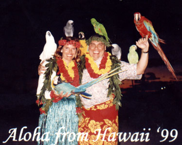

|
Raymond Augustus Greenfield was stationed with the Army in Panama when he met Sarah Pimentál. They married, and their first son, Raymond August Greenfield, was born in Panama City, Panama. This gave him dual Panamanian and US citizenship. Young Ray's family, soon augmented with more brothers and sisters, moved first to Arizona, then to New York, and then to Maryland. Ray served in the Army and the Navy and attended the University of Maryland, but eventually found his niche at IBM. At first this IBMer resented being transfered to the country backwater town of Manassas, VA in the late 1980's. Then he met the widow Bev Craig and married her on the 22nd of September in 1988. He quickly fell in love with her daughters as well and embraced his newfound role as their father.
In 1991 IBM transfered Ray to Atlanta, GA and he made a new home for his family in the suburb Alpharetta, GA. His daughters grew up, but one now lives in California. He and Bev now enjoy the quiet life of grandparents, although Ray remains an IBMer. |
 |